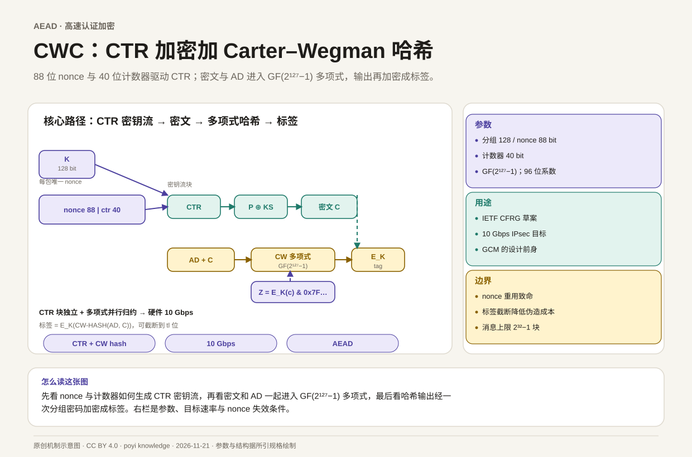
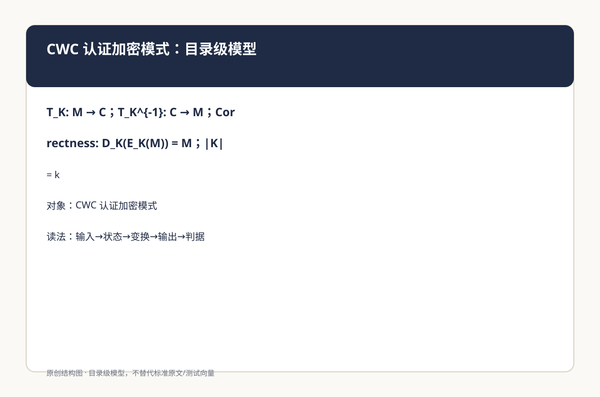

原理与机制
算法：CWC 认证加密模式（CWC authenticated encryption mode）。### CTR 加密 + Carter–Wegman 哈希
CWC 是认证加密（AEAD）：用 CTR 模式把明文变成密文，用 Carter–Wegman 多项式通用哈希把密文、关联数据和 nonce 压成一个标签。分组密码 128 位，nonce 88 位，计数器 40 位，消息最多 2^32−1 个块；标签长度可截到 tl 位，最长 128 位。### GF(2^127−1) 上的多项式
CWC-HASH 把输入切成 96 位块，当作 GF(2^127−1) 上的多项式系数，用 Horner 规则在秘密点 Z 上求值；Z 由分组密码加密一个常量并截掉最高位得到。哈希输出再经一次分组密码加密，形成最终标签。整数模 2^127−1 的乘法可以并行归约，这是 CWC 硬件吞吐的关键。

为什么重要
CWC 的设计特点是加密和认证共用同一把分组密码密钥：CTR 的密钥流和多项式哈希的密钥材料都从这把密钥派生，避免在高速硬件里为两把密钥做额外内存访问。CTR 块之间独立，多项式哈希可以并行归约，所以整条流水线能跑满 10 Gbps。### 为 10 Gbps IPsec 设计
2003 年前后，IPsec 路由器需要一条能线速处理、又没有专利负担的 AEAD。CWC 同时满足可证明安全、可并行、硬件 10 Gbps、软件快、无知识产权主张五个条件；它把 Carter–Wegman 的短标签优势带进高吞吐场景，设计者因此把它送进 IETF CFRG。
应用与实例
CWC 以 draft-irtf-cfrg-cwc-01 的形式进入 IETF CFRG，目标是 IPsec 的高速认证加密；GCM 的设计者在论文里把 CWC 列为 Carter–Wegman 计数器模式的先行方案。最终 NIST 选中 GCM，CWC 没有成为广泛部署的标准，但它的“CTR + 多项式哈希”路线被 GCM 继承。### 适用面
CWC 适合“高吞吐、可并行、能保证 nonce 唯一”的链路加密原型；不适合 nonce 难以管理的无状态设备，也不适合需要长期密钥、频繁换钥的协议。它的标签可以截短，但截得越短，伪造概率越高。

边界与攻击面
CTR 要求 nonce 唯一：同一密钥下重用 nonce，两条密钥流相同，异或两条密文就能恢复明文异或。多项式哈希的认证密钥也依赖 nonce，重用会让标签的可伪造性上升。标签截断到 tl 位会把伪造概率抬高到约 2^-tl；消息上限 2^32−1 块，超过就必须换密钥。CWC 没有内置密钥派生或 nonce 管理，部署方要自己保证。### 标准生态
CWC 停留在 IETF 草案和 FSE 论文，没有 NIST 标准、没有广泛的 AES-NI 优化、也没有协议默认套件。它不是“被攻破”，而是“没有被标准化生态接住”；这使它在工程选型中天然处于劣势。
历史与背景
Kohno、Viega 与 Whiting 在 2003 年把 CWC 提交 IETF CFRG，2004 年在 FSE 发表完整论文。它赶上了 IPsec 对高速 AEAD 的需求，却输给了 2007 年 NIST 标准化的 GCM；后者同样基于 CTR 和GF(2^128) 多项式哈希，但实现和标准生态更顺。CWC 现在是理解 GCM 设计谱系的重要中间站。### 名称澄清
CWC 不是“携带式工作组密码”，而是 Carter–Wegman + Counter 的缩写。把它误读成组织或产品名，会完全错过它的 AEAD 结构；这也是该条目从目录身份卡升级为机制正文的原因之一。
技术参数与复算边界
该条目的形式模型是 (C=E_K(P;r),\qquad P=D_K(C))。输入：输入：CWC 认证加密模式的公开参数、密钥/随机数与消息；变量说明：P 明文，C 密文，K 密钥，r 随机化参数。 预期输出：按 CWC 认证加密模式 的规范执行后得到可验证的输出或可比较的优势界。 复算必须给出输入、步骤、输出和单位；示例只演示流程，不替代标准测试向量。
复杂度由密钥长度、分组/状态规模、轮数、随机数质量和敌手模型共同决定；参数越界、版本差异与实现侧信道都可能使公式结论失效。已登记限制：该条目只给出形式模型与可复算步骤，不声称已完成生产实现、侧信道认证或第三方安全评估。
逐步示例与核验
形式模型与复算步骤
[C=E_K(P;r),\qquad P=D_K(C)]
CWC 认证加密模式的公开参数、密钥/随机数与消息；变量说明：P 明文，C 密文，K 密钥，r 随机化参数。1.按算法规范编码输入。2.在密钥控制下执行轮函数。3.输出密文并检查长度与格式。边界：公式只覆盖已登记的参数与假设；参数取值、标准版本和实现细节仍以来源为准。
参考出处
- Wikipedia search entry for CWC 认证加密模式. https://zh.wikipedia.org/w/index.php?search=CWC%20%E8%AE%A4%E8%AF%81%E5%8A%A0%E5%AF%86%E6%A8%A1%E5%BC%8F
- Handbook of Applied Cryptography (Menezes, van Oorschot, Vanstone). https://www.cacr.math.uwaterloo.ca/hac/